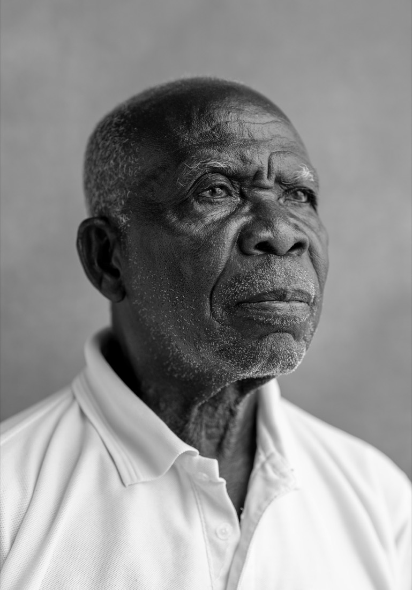
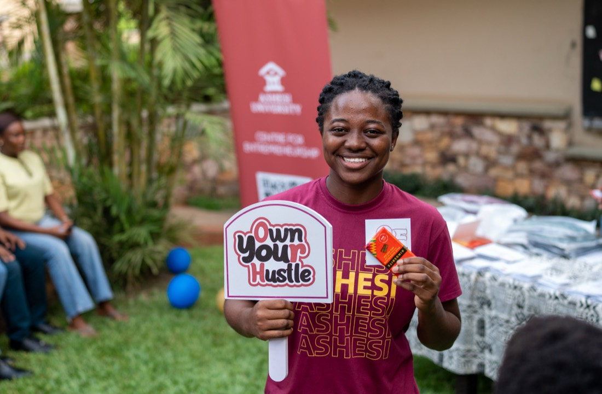
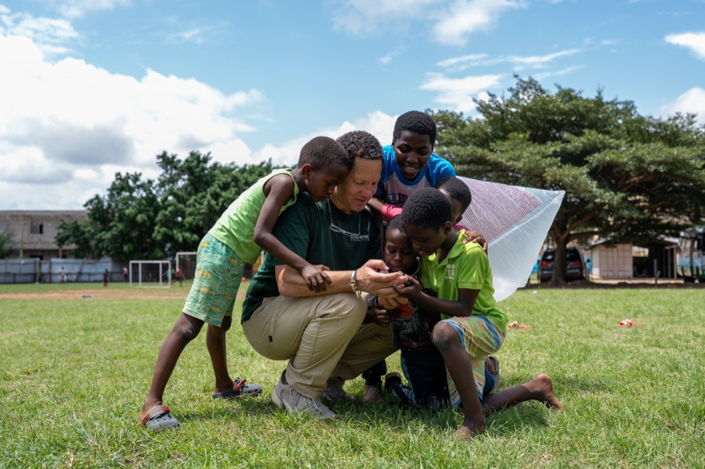
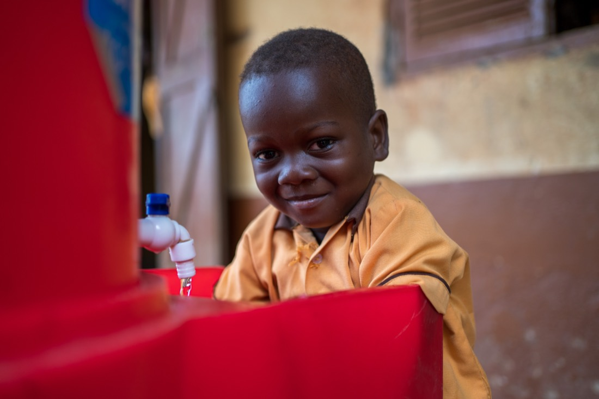
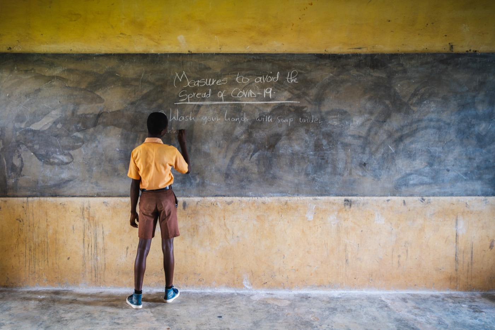

Engman Wulff is a creative agency working across photography, documentary film, and video production — crafting visual narratives for brands, institutions, and storytellers across West Africa and beyond.
Three disciplines, one studio. Each project is shaped by craft, patience, and an eye for the real.
Editorial, portrait, and documentary photography — shot on location across Accra and beyond.
Long-form, character-driven non-fiction films that follow real people, real communities, and real moments.
Brand films, conference coverage, campaign content, and short-form video built for screens of every size.
A selection of recent projects. Drag or scroll to explore — click any card to view the full gallery.





Engman Wulff is an African creative agency dedicated to crafting powerful documentary films and authentic visual stories that illuminate the people, ideas, and communities shaping the continent. Rooted in a deep understanding of local contexts and global storytelling standards, we produce compelling narratives that inspire action, foster connection, and amplify impact.
Beyond documentary storytelling, Engman Wulff delivers premium visual production services including commercial films, conference coverage, festival documentation, and branded content. We partner with NGOs, development organisations, institutions, and brands to create high-quality, cinematic content that is both strategically driven and emotionally resonant — ensuring every story is told with excellence, integrity, and purpose.
A simple, deliberate process from first conversation to final cut.
We start by listening — to your organisation, your story, and what you need the world to understand.
Concept, location, and shot list — every detail mapped before a single frame is captured.
On location or in studio, we shoot with patience, precision, and a documentary eye.
Edited, colour-graded, and delivered — ready for the screen, the campaign, or the archive.
Have a project in mind — a brand film, a documentary, a photo assignment? Tell us about it and we'll be in touch within two business days.
info@engmanwulff.com →